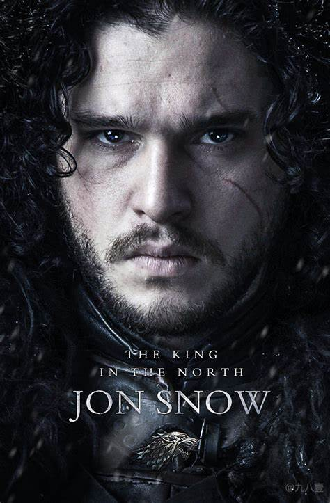
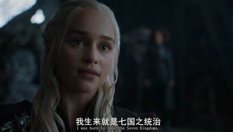

|  |
《权力的游戏》《权力的游戏》（Game of Thrones），是美国HBO电视网制作推出的一部中世纪史诗奇幻题材的电视剧。该剧改编自美国作家乔治·R·R·马丁的奇幻小说 《冰与火之歌》系列。由戴维·贝尼奥夫、D·B·威斯、艾伦·泰勒等人执导，大卫·贝尼奥夫和D·B·威斯编剧， 乔治·马丁担任剧本顾问，彼特·丁拉基、琳娜·海蒂、艾米莉亚·克拉克、基特·哈灵顿等人主演。 2015年，第67届艾美奖中《权力的游戏》破纪录斩获12项大奖，包揽了最佳剧情、导演、编剧、男配等大奖。 2016年，被选为2016美国电影学会十佳剧集。 2018年，获得第70届艾美奖最佳剧集奖。 2019年9月，该剧被英国《卫报》评选为21世纪100部最佳电视剧，名列第7位。 2021年4月，《权力的游戏》迎来开播十周年的纪念日 。 |
剧情简介
《权力的游戏第一季》
本剧内容主要来自于冰与火之歌系列小说第一部《权力的游戏》。 故事从维斯特洛大陆边境处发现远古传说中早已灭绝的生物开始，预示着危险即将到来。 而这片大陆的临冬城主暨北境统领艾德·史塔克（肖恩·宾饰）的家族也迎来了老友兼国王劳勃·拜拉席恩 （马克·阿蒂饰）的来访。国王希望艾德·史塔克能担任首相一职，对抗企图夺取铁王座的叛军。危情一触即发， 整个王国看似平和的表面下却是波涛暗涌。权高位重的拜拉席恩家族、勇敢善良的史塔克家族、 企图谋取王位的坦格利安家族、有着不可告人秘密的兰尼斯特家族。这些家族各怀鬼胎，国王的意外身亡，使国家马上陷入无尽的战乱之中。

《权力的游戏第二季》
本剧内容主要来自于冰与火之歌系列小说第二部《列王的纷争》。 艾德·史塔克死后，其属臣拥戴他的长子罗柏·史塔克（理查德·麦登饰）为北境之王。由罗柏率领的北境大军与兰尼斯特实力相互对峙 ，蓝礼·拜拉席恩（格辛·安东尼饰）的南境雄兵则不断朝君临开拔，还有动向不明的史坦尼斯·拜拉席恩（斯蒂芬·迪兰饰）， 以及西北黑海之上的铁群岛诸民。戍守北疆的守夜人与境外蛮族一决生死。龙之母丹妮莉丝·坦格利安（艾米莉亚·克拉克饰） 带着老弱残兵组成的卡拉萨，跟随彗星的轨迹，穿越茫茫洪荒，朝遥远渺茫的复国大业进发。凛冬将至，冷风渐起 。随着第二季剧情进入阴暗梦魇，艾莉亚·史塔克（麦茜·威廉姆斯饰）仍然处于兰尼斯特家族的囚禁之中； 泰瑞欧尽自己最大的努力在君临城清除险恶之徒；蓝礼和史坦尼斯处于战争的边缘，尽管凯特琳·史塔克（米歇尔·菲尔利饰） 恳求两人联手对付共同的敌人；珊莎·史塔克（索菲·特纳饰）仍然受困于残忍且越来越疯狂的乔佛里·拜拉席恩（杰克·格里森饰） 及他渴望权力的母亲手中；史塔克家族的男丁们则各自分散于从河间地到绝境长城之间的广袤土地上。与此同时， 龙母丹妮莉丝和她衣衫褴褛的多斯拉克人在魁尔斯城看到了一线新希望。
《权力的游戏第三季》
本剧内容主要来自于冰与火之歌系列小说第三部《冰雨的风暴》的前半部分。 故事紧接上一季，五王之战——罗柏·史塔克，巴隆·葛雷乔伊（帕特里克·麦拉海德饰），蓝礼·拜拉席恩、 乔佛里·拜拉席恩和史坦尼斯·拜拉席恩之间的战争——让七大王国陷入混乱。蓝礼已死， 史坦尼斯在夺取君临时被兰尼斯特家族和提利尔家族的新联盟击败。马泰尔家族依然支持兰尼斯特家族。 同时，大群野人在曼斯·雷德（塞伦·希德饰）的指挥下向长城进军，只有微弱力量的守夜人防守。 在远东，丹妮莉丝打算返回潘托斯组建一支能够夺回铁王座的军队。
《权力的游戏第四季》
本剧内容主要来自于冰与火之歌系列小说第三部《冰雨的风暴》的后半部分。 红色婚礼扫平了史塔克家族的主要成员，兰尼斯特家族巩固了对铁王座的统治，但来自南方、北方和东方的威胁依然不可小视。 当史坦尼斯在龙石岛重整旗鼓的时候，人送外号”多恩的红毒蛇“的奥柏伦·马泰尔（佩德罗·帕斯卡饰）来到了君临城， 立刻成为兰尼斯特家族眼下最直接的威胁。奥柏伦表面上是来参加乔佛里和马格丽·提利尔（娜塔莉·多默尔饰）的婚礼， 事实上可能有着不为人知的动机。在北方，曼斯·雷德率领的野人大军正在朝绝境长城进发，守夜人军团不仅人数处于绝对劣势， 而且失去了与维斯特洛大陆的联系，战争形势极为不利。更糟糕的是，可怕的不死生物异鬼选择在此刻现身， 给七大王国带来巨大威胁。在狭海的另一边，丹妮莉丝在三条龙和无垢军队的保护下向奴隶湾最大的城市弥林进军， 发誓要解放这座“奴隶之都”。一旦弥林被攻陷，她将有足够的战船和足够的军队横跨狭海重返维斯特洛大陆 ，夺回原本属于坦格利安家族的铁王座。
《权力的游戏第五季》本剧内容主要来自于冰与火之歌系列小说第四部《群鸦的盛宴》和第五部《魔龙的狂舞》。 杀死泰温·兰尼斯特（查里斯·丹斯饰）后，瓦里斯（康勒斯·希尔饰）带着提利昂·兰尼斯特（ 彼特·丁拉基饰）一同踏上了逃亡之旅，并为他指引一位明主。红毒蛇的情妇艾拉莉亚·沙德 （茵迪拉·瓦玛饰）决定携女儿们为其报仇。在山姆威尔·塔利（约翰·C·布莱德利饰）的帮助下， 琼恩成为了守夜人司令官，在来势汹汹的异鬼面前，琼恩做出了让所有守夜人吃惊的决定。托曼·拜拉席恩（迪恩-查尔斯·查普曼饰） 继承了王位，玛格丽终于成为了名副其实的王后，这让太后瑟曦·兰尼斯特（琳娜·海蒂饰）感到地位受到威胁， 烧脑宫斗与人鬼大战正式拉开了帷幕。 |

"龙妈“ |
《权力的游戏第六季》
本剧内容主要来自于冰与火之歌系列小说第五部《魔龙的狂舞》及部分原创情节。 提利昂和瓦里斯渡海投奔龙母丹妮莉丝，可后者却亦处于困境之中，复国计划停滞不前。另一边，太后瑟曦的权力被教会彻底架空， 裸体游街的耻辱之后，迎来的是唯一的儿子——如今的国王托曼的背叛。北边，布兰·史塔克（伊萨克·亨普斯特德-怀特饰）成为了三眼乌鸦， 珊莎在骑士布蕾妮（格温多兰·克里斯蒂饰）的保护之下最终顺利同哥哥雪诺汇合，他们的下一步计划，即是夺回被“小剥皮”拉姆斯·波顿 （伊万·瑞恩饰）所占领的临冬城。狭海对岸，丹妮莉丝被多斯拉克部落活捉后，利用三条巨龙的优势逃离部落并取回对奴隶湾的控制权， 在提利昂、瓦里斯、弥桑黛、雅拉·葛雷乔伊、席恩·葛雷乔伊、艾拉莉亚·沙德与提利尔家族的辅助下，丹妮莉丝率领着三条巨龙与无垢者军队、 多斯拉克大军渡过狭海，准备反攻维斯特洛大陆。
《权力的游戏第七季》
本剧内容主要来自于冰与火之歌系列小说第六部《凛冬的寒风》和第七部《春晓的梦想》以及部分原创情节。 丹妮莉丝·坦格利安，带着她的无垢者、多斯拉克军与部分铁群岛军队的联盟，三条极具威胁的巨龙， 以及她新任命的“国王之手”——提利昂·兰尼斯特，终于确定前往维斯特洛。琼恩·雪诺，被光之王的祭司梅丽珊卓（卡里斯·范·侯登饰）复活， 在“私生子之战”彻底击败了拉姆斯·波顿后，巩固了在北境的权力，重返临冬城并作为北境之王管理北境。君临城方面， 瑟曦没有任何后代存活下来，在用野火将大麻雀和其他敌人烧死在贝勒大圣堂后，她成功占据了铁王座。而在北方， 夜王逐渐形成对维斯特洛的最致命威胁，率领着一支死人军团准备摧毁北境的绝境长城而向南入侵。它们将会打破现状， 毁灭掉那些人类之间渺小的斗争果实。
演员介绍
由于剧中的演员太多了，这里就不一一做介绍了；就只介绍一下我在剧中最喜欢的角色“提利昂·兰尼斯特”。

|
提利昂·兰尼斯特是 七大王国前代理御前首相及凯岩城公爵泰温·兰尼斯特最小的孩子， 是个侏儒，容貌丑陋。提利昂非常喜爱读书，善于思考，富有谋略， 但是由于他天生畸形，出生时还导致母亲难产死亡， 所以父亲泰温对他极其厌恶。他跟哥哥詹姆·兰尼斯特的关系很好， 跟姐姐瑟曦·兰尼斯特的关系则非常糟糕。 |